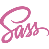
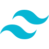
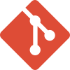
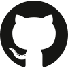
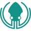
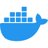
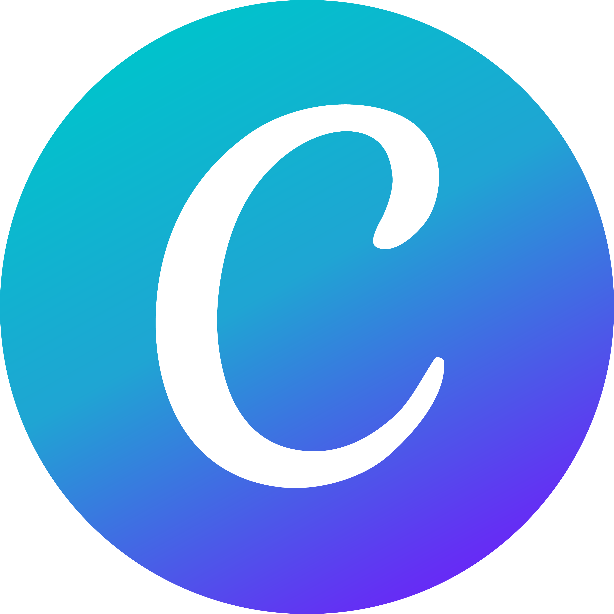

Stack técnico
Mis habilidades
Estas son las tecnologías con las que trabajo y las que estoy incorporando activamente. Disfruto mucho aprender herramientas nuevas — siempre hay algo interesante por descubrir.
Lenguajes & Maquetación
La base de todo. Me siento cómoda construyendo estructuras semánticas, limpias y accesibles.
Mi parte favorita. Flexbox, Grid, animaciones... me encanta hacer que todo entre en su lugar.

CSS con superpoderes. Variables, mixins y estructura modular para proyectos más ordenados.
En pleno aprendizaje y cada día me fascina más. Fundamentos sólidos e interactividad básica.
Frameworks & Librerías

Mi herramienta estrella. Construyo interfaces rápido y con muchísimo control visual.
El clásico que no falla. Ideal para estructuras ágiles, responsivas y consistentes.
Pequeño pero poderoso. Perfecto para agregar interactividad sin complicar el código.
Herramientas

Esencial en todo proyecto. Me siento segura versionando y colaborando en equipo.

Donde vive todo mi trabajo. Me gusta tener el historial de cada proyecto bien documentado.

Una interfaz visual para Git que hace el manejo de ramas y commits mucho más intuitivo.
Mi espacio de trabajo diario, con extensiones que hacen la vida mucho más fácil.

Todavía aprendiendo, pero ya lo uso para levantar entornos sin dramas de configuración.
El punto de partida de muchos proyectos. Me encanta pasar del diseño al código.

Para crear piezas gráficas rápidas y con buen impacto visual. Muy versátil.